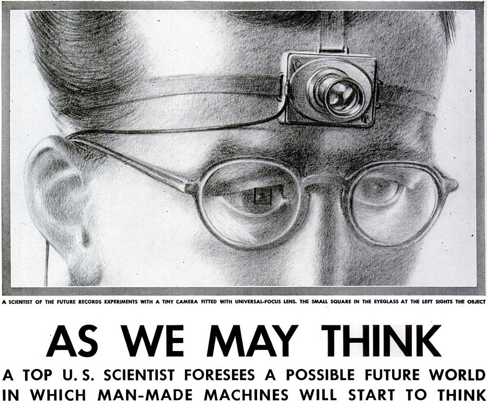
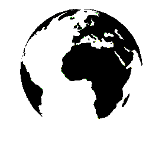

Week 01 Assignment
As We May Think - Vannevar Bush, 1945
Response:
The article, “As We May Think,” was written by Vannevar Bush in 1945. Bush was a man who directed thousands of scientists during wartimes. These scientists applied their expertise to warfare. Now that the war was ending, Bush urged scientist to apply their skills to fields beyond man’s “physical power”, but rather “powers of his mind.” He makes the case for technological advances that can make the vast amount of knowledge that has been collected by humans across time more accessible to the common person.
Towards the end of the article, it’s interesting to see Bush describe a device that is capable of doing just that. Now a days we know that the computer and the internet are tools that we can use to search and learn practically everything. Since this article was written before these concepts were developed, Bush comes up with a device he calls the “memex.” This is described as a tool that can store, “books, records, and communications.” His fantasizes that this device will be fast and serve as a supplement to memory. How accurately he describes how the Internet is used today is very ironic.
Long Live the Web - Tim Berners Lee, 2010
Response:
In the article, “Long Live the Web,” the author powerfully states that the Web is founded on egalitarian principles. This mean that every individual is capable of sharing and creating information via this platform which is why the Web is such a powerful tool today. These freedoms originally intended for all, however, are being threatened by Internet Providers who seek to slow down any sites they want, as well as governments who hyper-monitor the activity of its citizens. The author calls on people to care about this issue because the Web should be considered a public resource that is depended on by many members of the community. Inhibiting its use is the same as inhibiting free speech. In order to make sure the Web continues to remain completely free and universal, the author states there are key principles that need to be maintained. This includes people being able to access the Web no matter their device, language, nationally, etc. Decentralization also ensures that approval is not needed to make or use anything on the Web. By allowing the Web to continue to be a free tool, it can be used to further benefit humanity.